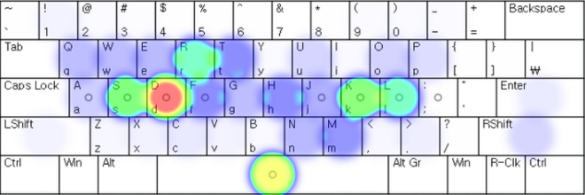
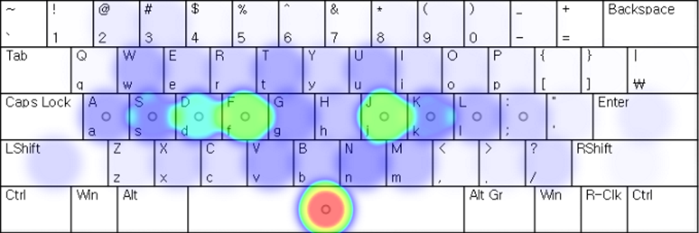

Korean Input Methods
한국어 입력법
By Alan W — December 28, 2019
This page offers a descriptive account of Korean language input methods to English speaking audiences. This page is written for people interested in keyboard layouts, broadly and focuses on the design and ergonomics of Korean keyboard layouts rather than history or the Korean language.
I make use of Yale Romanization for Korean (in addition to giving 한글 hankul because it more-or-less corresponds to written Korean. This Romanization system is useful for discussing keyboards because it reflects equivalents of the letters that Korean speakers would type. It is less intuitive and requires some extra practice to pronounce correctly for English speakers; however, since learning Korean isn't the focus of this article I leave this as an exercise to the reader. All uses of Yale Romanization will be typeset specially so it is easy to tell when a linguistically-motivated spelling is used for illustrative purposes and when conventional spellings are used to make searching for more information easier.
Korean Language and Orthography
In order to understand Korean keyboard layouts, a grasp of at least a few aspects of the Korean language and Korean orthography are necessary. Here I present a brief account that should be sufficient for understanding keyboard matters.
Speech
Korean, as a spoken language, allows for syllables of the
form (C)V(C), where C represents
a consonant and V represents a vowel.
Below are some examples of Korean words:
- 사람 salam person
- 한국 hankwuk Korea
- 자판 caphan keyboard
- 진짜 cincca really
- 감사합니다 kamsahapnita thank you (formal)
- 화학 hwahak chemistry
- 위에 wi-ey on top of
A few relevant things to note are:
- Korean sometimes has doubled consonants, e.g. 'cc' in 진짜 cincca.
- Korean doesn't make use of especially complex consonant clusters (like German Schz... or English st, sh, sch...
- Vowel-consonant alternations are frequent, though vowels and consonants both may appear in sequence (linguist lingo diphthongs, consonant clusters respectively)
Syllabic Blocks
Unlike in Latin (as well as Cyrillic, Greek, ...) based writing writing systems, Korean writing is organized into syllabic blocks rather than linearly. In linear systems, like the standard spelling of American English, characters appear one after the other in a 1 dimensional line. Syllabic blocks are two dimensional rather than one dimensional, albeit in a constrained way.
Let's look at a couple syllabic blocks. Below, I insert periods (.) between syllabic blocks. The word 학교 hak.kyo "school" is composed of two syllabic blocks: 학 hak and 교 kyo. The first block, 학 hak, consists of three letters ㅎ ㅏ ㄱ h a k which are then combined according to some consistent rules (out of the scope of this article). The second syllable, 교 kyo, is composed of two letters, ㄱ ㅛ k yo.
h a k k yo "school"
The pronunciation of Hangul takes some getting used to because there are a number of assimilation rules (sound segments next to each other affecting how letters are read). Similarly, there are rules governing how adjacent syllable blocks affect one another, similar to French liason, e.g. wherein the 's' segments in Nous avons... "we have" are pronounced or not depending on what words follow them.
For more information, read about Hangul.
No Upper/Lower Case
Korean does not distinguish upper and lowercase letters. This permits the SHIFT key to be used to activate another "input layer" to input additional characters, similar to how holding down ALT on some keyboard layouts is used to input characters not available on the "default" layer.
Laptops & Desktop Computers
Two-set layout (2-beolsik)
By far, the most popular Korean keyboard layout is 2-beolsik 두벌식 twu-belsik. Other spellings include 2-bulshik, 2-beolshik, and Dubeolsik. This layout is also known as the "two-set" layout in English.

Image source: Wikipedia (Korean)
{kind=link}
In this layout, the keyboard is divided into two "sets" (hence the name) which roughly correspond to consonants and vowels, similar to the Dvorak keyboard layout for English. Vowels are on the right and consonants are on the left.
As can be seen in the QWERTY row in the diagram above, the SHIFT key is used for entering doubled consonants and some (diphthong) vowels. For letters that are not able to be doubled, pressing SHIFT typically doesn't do anything.
Pros and Cons
Due to the nature of the Korean language, the consonant-vowel alternation with consonants mainly on the left hand and vowels mainly on the right hand lead 2-beolsik typing to have a lot more left hand, relative to right hand, activity.
Furthermore, the (strong) index fingers aren't doing nearly as much work as they could be doing.
Image source: 세벌식.kr
Nonetheless, the 2-beolsik layout is a good default for many reasons. The consonant/vowel division is intuitive. Pressing SHIFT to double consonants and modify vowels is intuitive. The layout does not demand much stretching to far away keys. Additionally, it makes good use of the home row.
Three-set layouts (3-beolsik)
"Three-set" layouts are called as they are because they divide the keyboard into three sections corresponding to different parts of a syllabic block. These are,
- Initial Sounds 첫소리 ches-soli
- Middle Sounds가운뎃 소리 kawundeys-soli
- Final Sounds끝소리 kkuth-soli
There are many three-set layouts; here I will focus on the 3-beolsik 390 because this is the next most popular Korean keyboard layout after the 2-beolsik. Here's the layout:

Image source: Wikipedia (Korean)
Looking at the groups from right to left we have the Initial Sounds (Green), Middle Sounds (Beige) and Final Sounds (Pink). The way this layout works is by a kind of "arpeggiated chord" action. Typing a syllable is initiated with the right hand selecting an initial sound, followed by the left index or middle finger selecting a middle sound (vowel) and then the left middle, ring, or little finger selecting a final sound (which is often not required). Both hands are thus coordinated together in a sort of rolling action.
If you look closely, you may notice that some letters appear to be duplicated. This can be seen as a feature rather than a useless redundancy. Often in, words will have the same letter at both the beginning and end of a syllable (e.g. 밥 pap "rice", 각 kak "every"). Having some letters appear more than once on the keyboard allows typists to continue the same right-to-left rolling flow even when consonants are repeated.
Another interesting feature of the 3-set setup is that accidently pressing two keys together or in the wrong sequence does not necessarily lead to a typo. As each keypress is assigned a "place" in a syllabic block, pressing the sets out of order (e.g. accidentally pressing the left hand before the right hand) is a "forgivable" error. It is like being able to type 'a', 'c', 't' and still getting the result cat. Wow!
Three-set layouts are highly optimized for Korean. This is not problematic because the 한글 hankul script is pretty much only used to write Korean. The same cannot be said of the Latin ("English") alphabet, which is used with many languages.
3-beolshik 390
The 3-beolshik 390 layout featured in the image above allows the user to enter integers in numpad like manner with the right hand while SHIFT is held with the left hand. The shift key on the right hand is used to access less-commonly used final sounds.
This layout requires some stretching sometimes as it makes use of the number keys. Unlike with the 2-beolsik layout, doubled consonants are not produced by holding the shift button, but rather by pressing the correct consonant's key twice, just as in typing English or any other linearly arranged alphabetic language.
Image source: 세벌식.kr
Wow! What a comfy heat map! Below is a video of some high speed 3-beolshik action.
안마태 Anmatay Layout
The same 3-set principle used in the 3-beolshik 390 above is used in other layouts as well. In the 안마태 Anmatay Layout, initial sounds go on the top left, middle sounds go on the top right, and final sounds go on the bottom

Image source: Wikipedia (Korean)
This layout has some additional cool features. Like 3-beolshik 390, rather than use the shift key to enter double consonants, Anmatay produces double consonants by pressing the same key twice. Anmatay does away with even more keys by allowing other consonants and consonant combinations assigned their own key on 3-beolshik 390 to be created by pressing sequences of keys. For instance:
- ㅈ + ㅎ = ㅊc + h = ch
- ㄱ + ㅎ = ㅋc + h = ch
- ㄱ + ㅇ = ㄲc + h = ch
The last example given above involves typing a sequence of characters not allowed in actual Korean as a compose sequence for entering another sequence.
Anmatay also puts punctuation within closer reach via the shift key as it doesn't need the number row like 3-beolshik 390 does.
Summary
2-beolshik is by far the most popular Korean keyboard layout—the QWERTY of Korea. It is relatively ergonomic compared to other default layouts of the world. This layout is characterized by a two way separation of consonants and vowels.
3-beolshik layouts are less popular, but more ergonomic for typing Korean. These layouts are arranged in a three-section layout of Initial, Middle, and Final sounds which correspond to the components making up a syllabic block in Hangul.
Just as there is great diversity in keyboard layouts for English and other layouts, there are many alternative layouts for Korean. They tend to respect certain principles:
- Balance keystroke load on each hand
- Avoid shift key when possible (i.e. don't key chord!)
- Utilize the basic 3-beolshik idea of separating the keyboard in three sections, corresponding to Korean orthography
Mobile
Korean input methods for mobile devices can be divided into two main flavors: (1) those that correspond with a PC input method as described above, (2) mobile-first layouts. Mobile first layouts typically have larger buttons (corresponding to 10-key style phone key arrangements) and may make use of actions such as swiping and holding down keys to compose hankul syllabic blocks.
Keyboard-syle layouts will not be discussed here. They are basically the same as in any other language.
Ten-Key Style Input Methods
Korean 10-key style input methods typically involve selecting consonants by pressing a target 'base' consonant and then sliding slightly up, down, left, right, or just releasing the finger to get the correct character. A similar method is used in Japanese kana-input systems with ten-key-like interfaces. See the 딩굴 Tingul "Dingul" input method in action below:
Vowels are a bit more interesting—they are composed graphically in a manner similar to Chinese Canjie input (albeit in a considerably simpler context).
Links and Resources
- 세벌식.kr — on "3-set layout"
- Using 3-word-typing system for 10 years... Shocking (Video in Korean on YouTube)
- 매우 훌륭한 안마태 세벌식 자판 (바다야크)
Fun and Learning
Copyright 2019 — Alan Wong
All text, I wrote. All images edited by me with originals sources and linked.